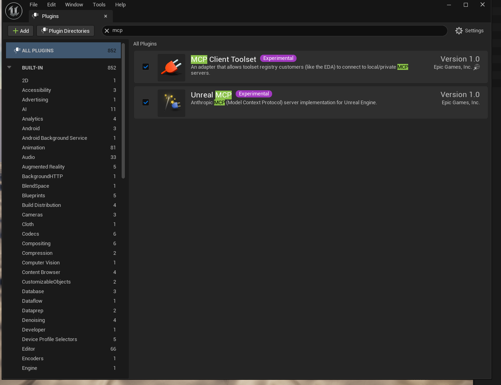
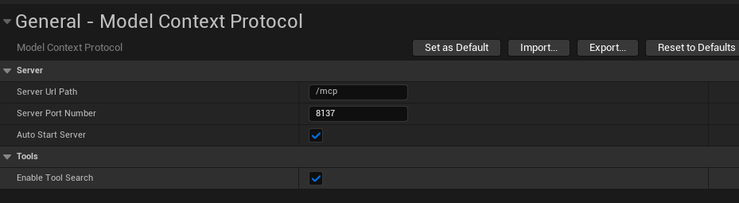
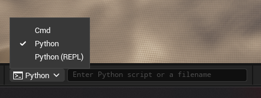

Wire Claude Code to the Unreal Editor
Get Claude Code driving the Unreal Editor through the built-in Model Context Protocol (MCP) server — with the full set of editor toolsets exposed. Written from a real, working setup, gotchas included.
AgentSkillToolset). The actual editor toolsets are
separate plugins — enable “All Toolsets” to get them all.0Prerequisites
- Unreal Engine 5.8 — the MCP plugins are experimental and ship with 5.8.
- A UE project (C++ or Blueprint-only both work).
- Claude Code installed and runnable from a terminal.
- (Optional) Git + Git LFS if you want source control for the project.
1Enable the plugins
In the editor: Edit → Plugins. Enable each of these, then
restart the editor when prompted.
| Plugin | Why |
|---|---|
| Unreal MCP | The MCP server itself (Anthropic MCP implementation for UE). |
| Toolset Registry | Auto-enabled as a dependency of Unreal MCP. |
| All Toolsets ⭐ | The key one. Aggregator that pulls in every editor toolset (Scene / Actor / Blueprint / Material / PCG / Niagara / UMG / BehaviorTree / …). Without it you only get skill management. |
| Python Editor Script Plugin | The editor toolsets are authored in Python; Python must be loaded. |

After enabling, restart the editor so the Python modules load.
2Configure the MCP server
Edit → Editor Preferences → General → Model Context Protocol:
| Setting | Value |
|---|---|
| Server Url Path | /mcp |
| Server Port Number | 8000 (default) — or pick your own, e.g. 8137, if 8000 is in use |
| Auto Start Server | ON — binds the server on editor launch |
| Enable Tool Search | ON — required; this is how Claude discovers the tools |

3Point Claude Code at the server
In your project root (next to the .uproject), create a file named .mcp.json:
{
"mcpServers": {
"unreal-mcp": {
"type": "http",
"url": "http://127.0.0.1:8000/mcp"
}
}
}- If you changed the port in Step 2, change
8000here to match (e.g.8137). - If you already have other MCP servers in this file, merge this
unreal-mcpentry into the existingmcpServersobject — don’t overwrite it.
ModelContextProtocol.GenerateClientConfig ClaudeCode4Start the server & verify it’s live
- The server auto-starts if Auto Start Server is on. To start it manually, open the console (`), set the dropdown to Cmd, and run:
ModelContextProtocol.StartServer
Set the console dropdown to Cmd (not Python) to run MCP console commands. - From a terminal, confirm the port is responding:
curl -sS http://127.0.0.1:8000/mcp- ✓ A response (even HTTP 405 Method Not Allowed) means the server is up and speaking MCP. 405 is expected for a plain GET.
- ✕ “Could not connect” means the server isn’t running — re-check Steps 1–2.
5Start (or restart) Claude Code — order matters
Correct order:
- Editor open, plugins enabled, server live on the port (verified in Step 4).
.mcp.jsonpresent and pointing at the right port.- Then start / restart Claude Code from the project root.
If you edit .mcp.json or only just started the editor server, restart Claude Code so it reloads.
6Verify Claude can see the tools
Claude should now have these MCP meta-tools: list_toolsets, describe_toolset, call_tool.
Ask Claude to list the toolsets. A fully-working setup returns ~50 toolsets, including:
editor_toolset.toolsets.scene.SceneTools— place/remove actors, levels, cameraeditor_toolset.toolsets.actor.ActorTools,...blueprint.BlueprintTools,...object.ObjectTools...material.MaterialTools/material_instanceBehaviorTreeTools,NiagaraToolsets,UMGToolSet,PCGToolset,AutomationTestToolset, and more.
AgentSkillToolset, the feature toolsets aren’t loaded — go back to Step 1,
make sure All Toolsets is enabled, and restart the editor. Then in the Cmd console run:
ModelContextProtocol.RefreshTools★Troubleshooting cheat-sheet
| Symptom | Fix |
|---|---|
Only AgentSkillToolset shows up | Enable All Toolsets + restart editor; run ModelContextProtocol.RefreshTools. This is the #1 issue. |
| Claude sees no MCP tools at all | Server not live when Claude started, or .mcp.json wrong/missing. Verify with curl (Step 4), fix config, restart Claude after server is up. |
curl says “Could not connect” | Server not running — ModelContextProtocol.StartServer in Cmd console; confirm Auto Start Server is on; check the port matches .mcp.json. |
| Port 8000 already in use | Pick another port in Editor Preferences (e.g. 8137) and update .mcp.json to match. They must be identical. |
| “Add GameFeatureData entry?” dialog | Click Yes — harmless, from the Game Features toolset. |
| Console command does nothing | Make sure the console dropdown is set to Cmd, not Python. |
| Changed a setting/plugin, no effect | Plugin/port changes need an editor restart; client config changes need a Claude Code restart. |
▥How it fits together
Claude Code --(.mcp.json: http://127.0.0.1:<port>/mcp)--> Unreal MCP server
(inside UE Editor)
|
Toolset Registry
|
+-------------------+---------------------+--------+
AgentSkillToolset EditorToolset (Scene/Actor/ ...~50 toolsets
(native, always) Blueprint/Material/Object) via All Toolsets
(Python)- Tool Search mode (on by default) keeps
tools/listsmall: Claude gets the 3 discovery meta-tools and pulls specific tool schemas on demand. Leave it on. - Toolsets are discovered at editor startup (and on
RefreshTools), so plugin changes need a restart to register.